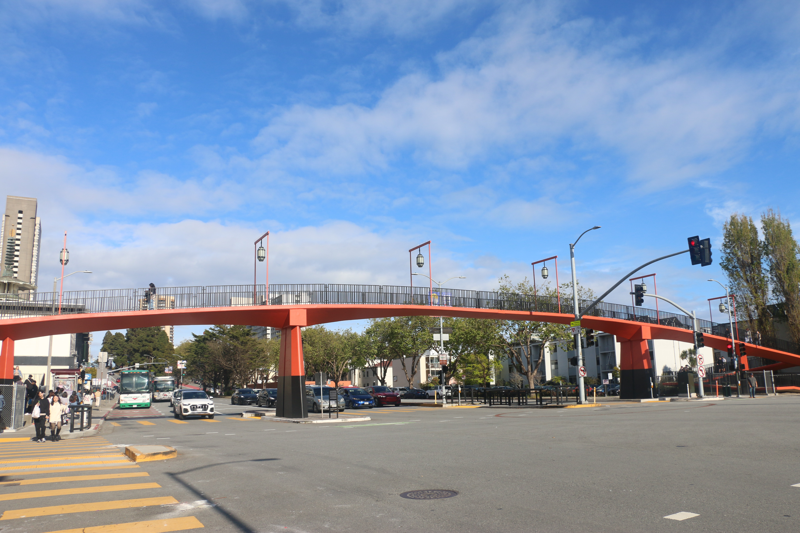
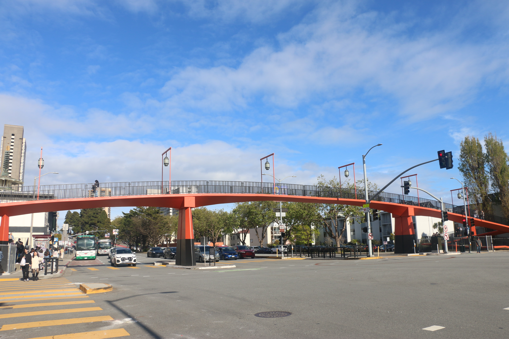

Explore my first photo essay on San Francisco Japantown's Cherry Blossom Festival
My name is Isabella Marzban, and I'm a visual journalist with experience with newspaper/magazine feature writing, shortform video content, documentary film, photojournalism, and data journalism.
My goal is to create journalistic stories through photography and film, which has led me to making photo essays for life in the Bay Area.
For my first, I captured scenes from Japantown's Annual Cherry Blossom Festival, leading to me calling my essay: "In Bloom."

As winter ends, a group of barren trees in the Bay Area become adorned with bright pink petals of cherry blossom flowers.
Once in bloom, these iconic flowers are littered all across the Bay, leaving behind a dreamy pink haze over the cold urban streets of Berkeley and San Francisco.
The cherry blossoms specifically dominate the grounds of Japantown in San Francisco, which is often coined as the heart and home for many of these flowers in the Bay.


For my photo essay, “In Bloom,” viewers are transported into scenes from Japantown’s 57th Northern California Cherry Blossom Festival that took place on April 13, 14, 20, and 21.
During the festival, there’s Japanese food stands, shopping booths with trinkets, famous Japanese ube and black sesame ice cream, and performances by school children along with older dance groups.


In the beginning of “In Boom,” a poster, saying “Welcome to Japantown,” is the guiding sign and entrance for the festival, leading the tower inside the Peace Plaza. Inside the confines of the Peace Plaza, there are rows of chairs lined and centered in front of a small stage that is adorned by a pink banner, painted in cherry blossoms.
Throughout the afternoon, dance performances from kindergarten- to elementary-aged children came in one after the other until an all women dance group went on stage to end the day, leading to cheers and standing ovations from the crowd.
 

Outside the Peace Plaza, there are rows of commercial booth stands, selling imported Japanese goods along with original artwork, lining across the closed off streets of Japantown.
As the sun begins to set upon the city, the orange hue of the sky illuminates the bustling crowd that is large enough to block off the skyline.
A noticeable group of three forms in the crowd that captured my camera’s attention, which was three women, wearing brightly colored kimonos and bright pink hair clips that matched the color of the cherry blossoms in bloom.
These three women shot in the same horizontal length as my opening photo are the end to my essay as well.